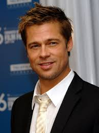

В школе юный Питт занимался спортом, посещал музыкальный кружок и был участником студенческого управления. По окончании школы молодой человек стал студентом университета Колумбия. В нем он изучал рекламное дело и журналистику. Однако по профессии Брэду работать так и не пришлось. Окончив университет, парень отправился покорять Голливуд. В то время Уильям Брэдли изменил свое имя.
Прежде чем к нему пришёл актёрский успех, Питт работал водителем, перевозчиком мебели и даже зазывалой в сети ресторанов «El Pollo Loco» и должен был в костюме гигантского цыплёнка приглашать прохожих посетить их заведение. Параллельно с этим он посещал актёрские курсы. Его карьера началась в 1987 году, он сыграл эпизодические роли в таких фильмах, как «Нет выхода», «Нейтральная полоса» и «Меньше, чем ноль». Дебютировал на телевидении, сыграв в нескольких эпизодах сериалов «Другой мир» и «Проблемы роста» (англ.)русск., позже появился в сериале «Даллас». В следующем году сыграл в сериале «Джамп стрит, 21».
В 1994 году в карьере Питта наступил переломный момент. Сначала он сыграл Луи де Пон дю Лака в фильме «Интервью с вампиром» по одноимённой книге Энн Райс и получил две премии на MTV Movie Awards 1995. Затем он снялся в фильме «Легенды осени» по одноимённому роману Джима Харрисона, сыграв Тристана Ладлоу, сына полковника Уильяма Ладлоу (Энтони Хопкинс). За эту роль Питт был впервые выдвинут на премию «Золотой глобус» в номинации «За лучшую мужскую роль». Хотя фильм получил смешанные отзывы, игра Питта была высоко оценена критиками